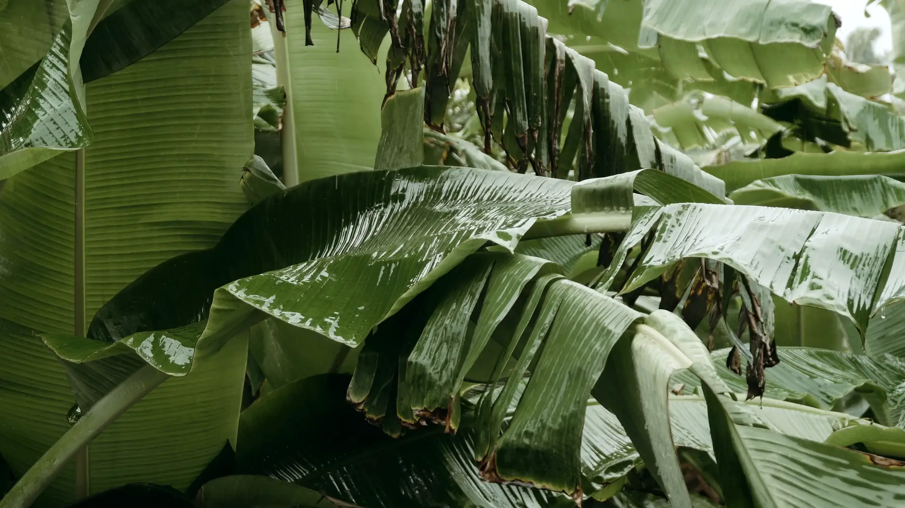
A typical November afternoon in Singapore
29.1°C
0.6 mm of rain in the last five minutes
Hujan Panas, a dessert house in Singapore. The weather now: Hujan
Ginger-soup weather. The warm end moves up.
No live reading on this page yet; the numbers are what this hour usually looks like.
The board
Twelve things, sorted by the sky.
We used to write the menu on a whiteboard and move the soups up by hand when it rained. Now the board does it from the nearest weather station, every five minutes.
Above about 31°C on a dry day, chilled tau huay overtakes everything by three o'clock. Below 28°C, or once it rains, tang yuan takes the top line.
Board sorted for 29.1 degrees and 0.6 millimetres of rain. First: Tang yuan in ginger syrup.
-
where it sits on a usual day S$3.80
Tang yuan in ginger syrup 汤圆
Plain and pandan glutinous rice balls in old-ginger syrup boiled for three hours, crushed peanuts on top.
Served hot
-
up 1 place on a usual day S$3.60
Pulut hitam
Black glutinous rice cooked down with pandan, a spoon of salted coconut milk on top.
Served hot
-
up 2 places on a usual day S$3.20
Tau suan 豆糊
Split mung beans thickened with sweet potato starch, with cut you char kway on the side.
Served hot
-
up 3 places on a usual day S$3.20
Red bean soup 红豆汤
Red beans and dried tangerine peel, cooked until a third of the beans have given up.
Served hot
-
up 5 places on a usual day S$4.80
Orh nee 芋泥
Yam paste, ginkgo nuts and pumpkin. Served warm. Heavier than it looks.
Served hot
-
where it sits on a usual day S$3.60
Bubur cha cha
Sweet potato, yam and sago in coconut milk. The one people order for their mother.
Served warm or cold
-
up 1 place on a usual day S$3.20
Green bean soup, coconut milk 绿豆汤
Whole mung beans and a pour of coconut milk. Warm at night, cold after lunch.
Served warm or cold
-
up 3 places on a usual day S$1.40
Ang ku kueh 红龟粿
Red tortoise kueh with peanut or mung bean filling, pressed in the old wooden mould.
Served room
-
where it sits on a usual day S$3.00
Ondeh-ondeh, six
Pandan dough round a pocket of palm sugar, rolled in fresh grated coconut.
Served room
-
up 2 places on a usual day S$1.60
Kueh lapis, per slice
Nine steamed layers. Peel them one at a time; nobody is watching.
Served room
-
down 9 places on a usual day S$2.80
Tau huay, chilled 豆花
Silken beancurd set this morning, with barley and a thin rock-sugar syrup.
Served cold
-
down 8 places on a usual day S$3.80
Cheng tng, iced 清汤
Longan, red dates, white fungus, lotus seeds and barley in a light syrup, over ice.
Served cold
When it rains
The warm end.
Four pots stay on the low flame from noon. The ginger syrup goes on at six in the morning and is tasted again at eleven. If it is too sharp we add rock sugar; we never add water.
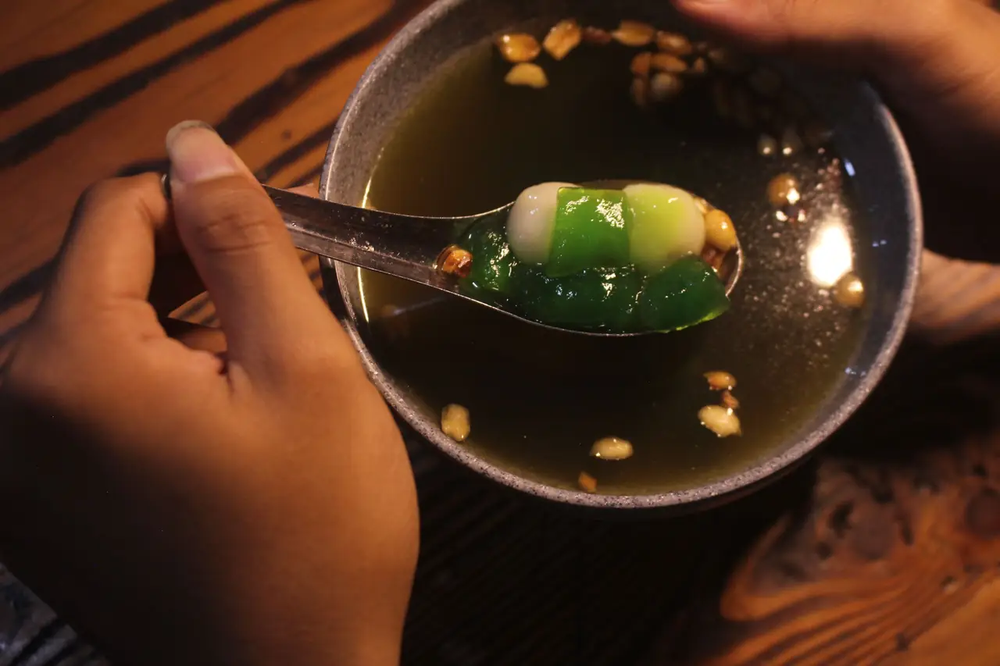
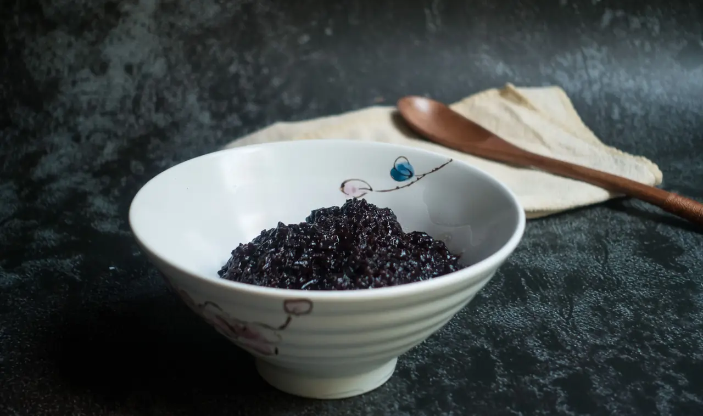
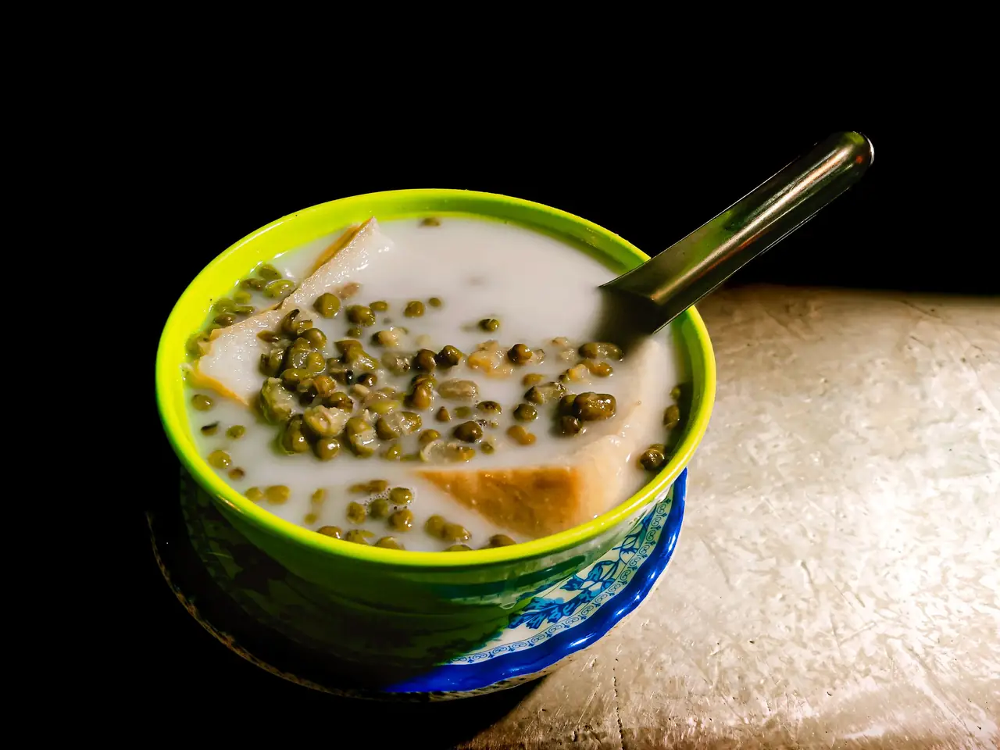
Tau suan and orh nee are the two things regulars ask for by name. Neither is pretty. Both are gone by eight on a wet night.
When it is panas
The cool end.
The tau huay sets at half past eight and goes straight into the chiller at four degrees. On the hottest afternoons we sell out of it before the school bell; on a wet day the same tray lasts until dinner.
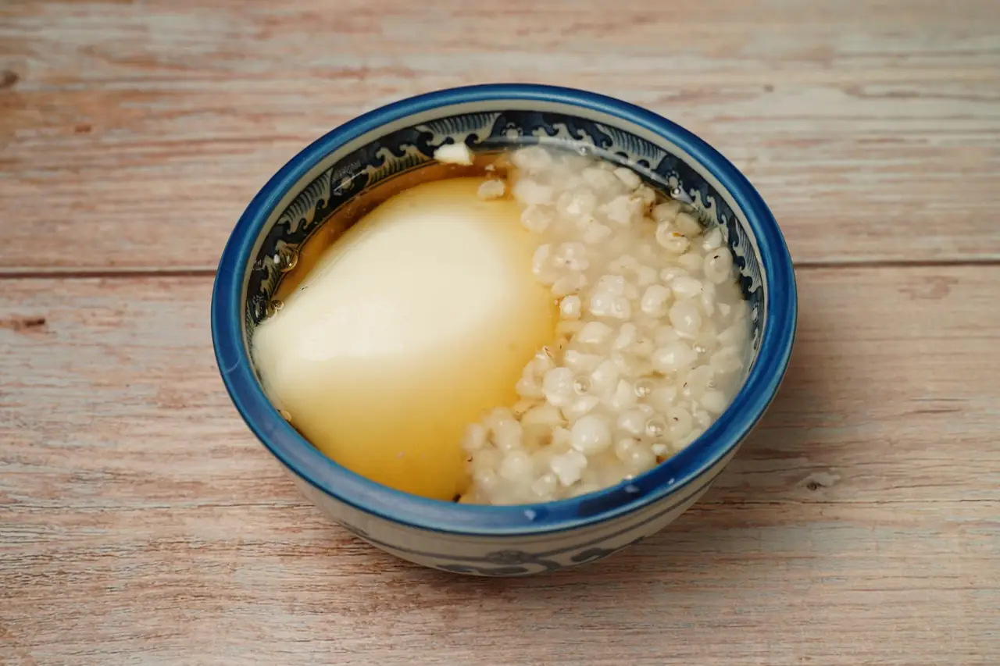
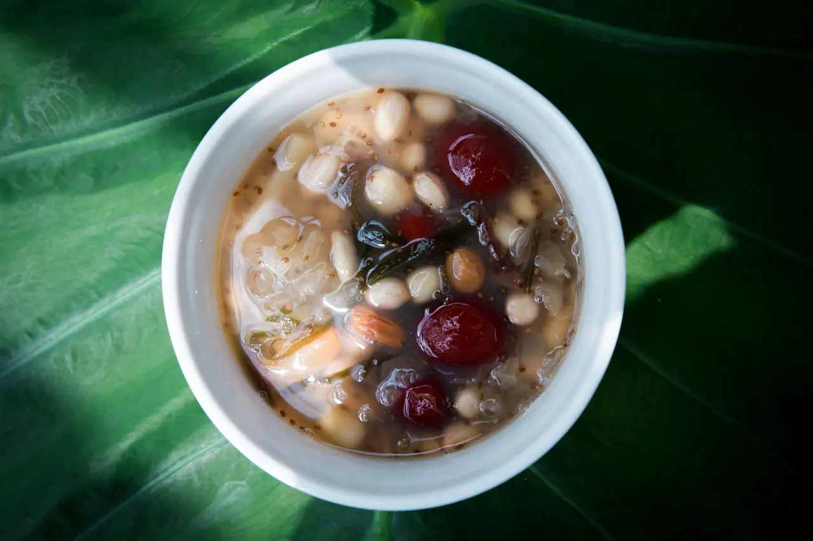
Before the shutters go up
Six in the morning, logged.
Beans drained. Mung beans and red beans have soaked for eight hours. The water goes on the plants.
Ginger on. 2.4 kg of old ginger, bruised with the back of a cleaver, into 18 litres of water for three hours.
Soy milk on. 32 litres, stirred the whole time and never brought to a hard boil, or the tau huay tastes of the pot.
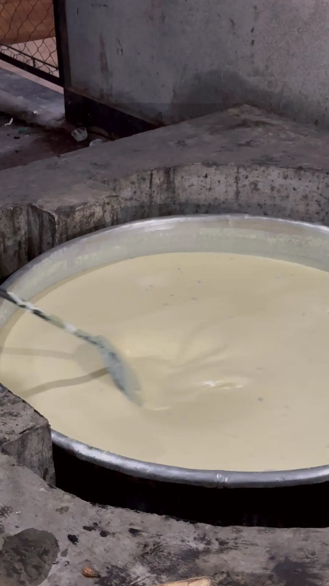
Tau huay set. Forty minutes with the lid on. Nobody opens the lid.
Coconut. Twelve coconuts grated and squeezed by hand; the first press goes on the soups, the second into the pulut hitam.
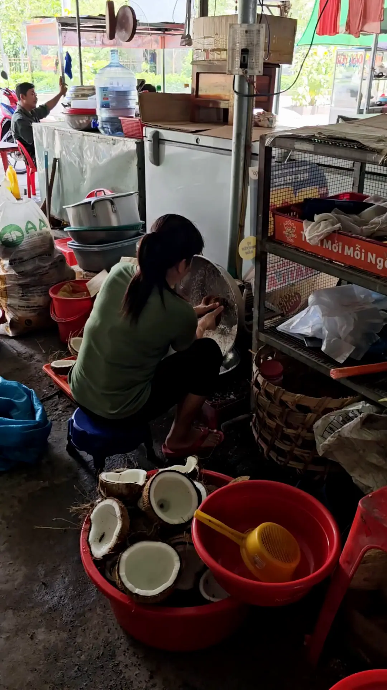
Tasting. One spoon of everything. Sugar is adjusted now, never after we open.
Syrup poured. The ginger syrup goes into a warmed jug, then over the first tray of tang yuan.
Shutters up. The board reads the weather for the first time today.
Not on the weather
The kueh tray.
Kueh does not care about the sky, so it sits outside the sort. Two aunties in the next street make it and walk it over at half past ten, about 140 pieces on a weekday and 220 on a Saturday. When the tray is empty, it is empty.
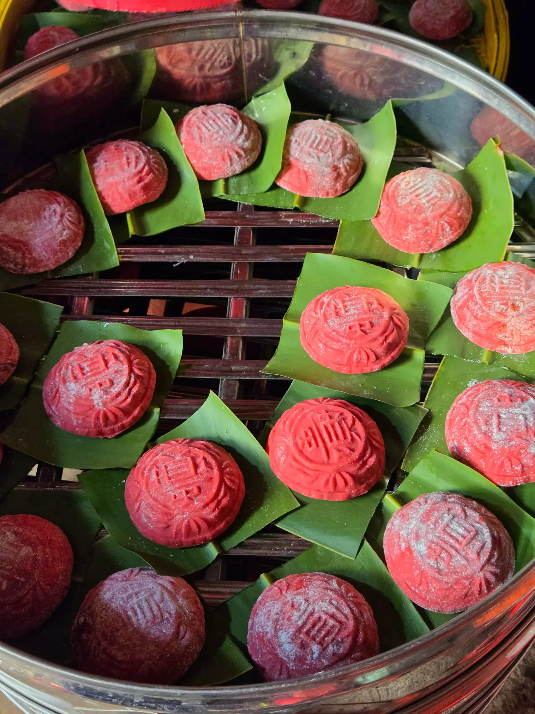
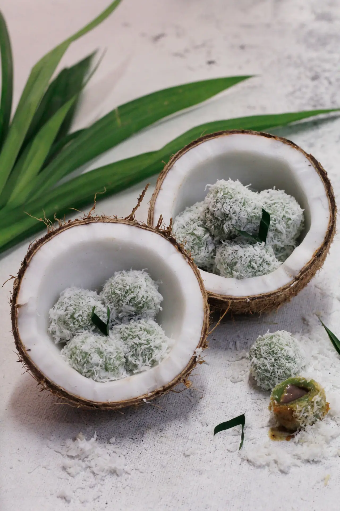
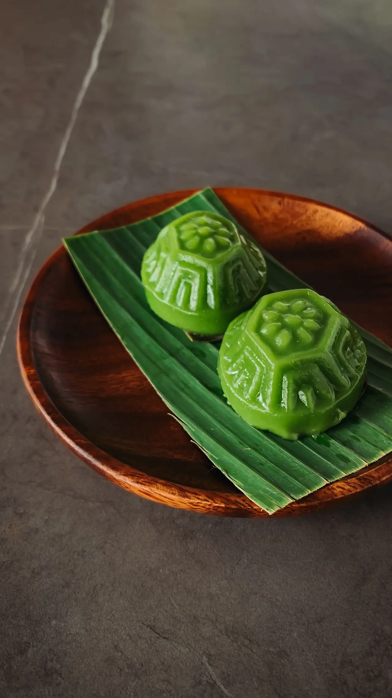
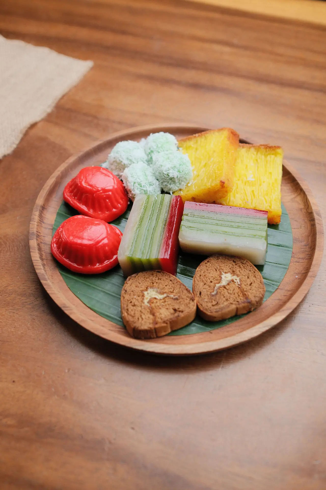
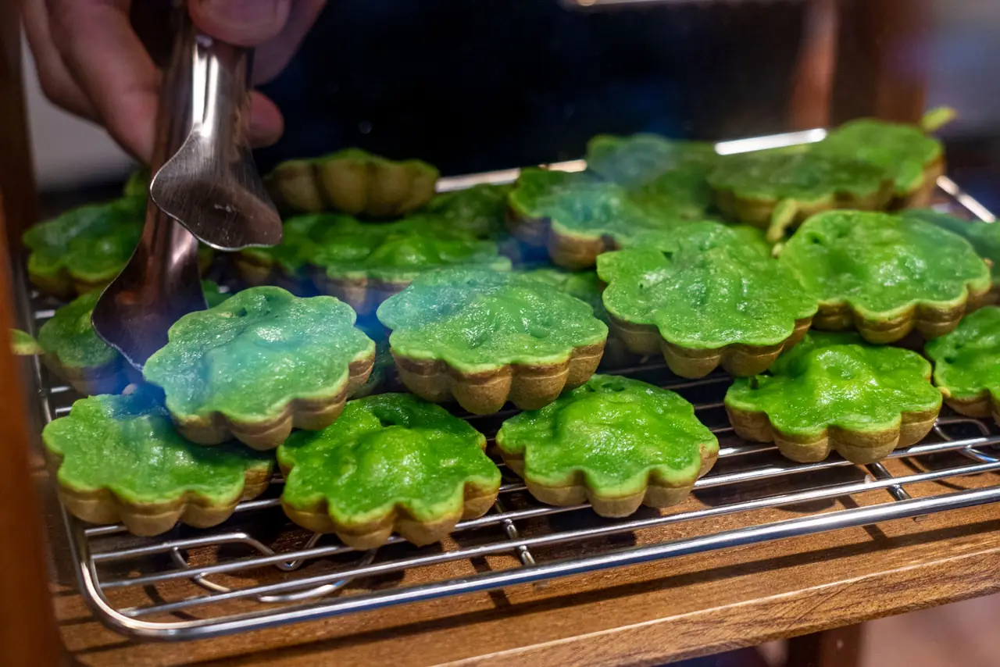
Our own count, October
What the weather did to the pot.
Warm bowls Cold bowls Rained after lunch 15:00 temperature, 26 to 34°C
69% of bowls were warm on the 11 wet afternoons.
36% on the 16 dry ones.
3,360 bowls in October. The busiest cold day was 18 October, 32.6°C at three o'clock.
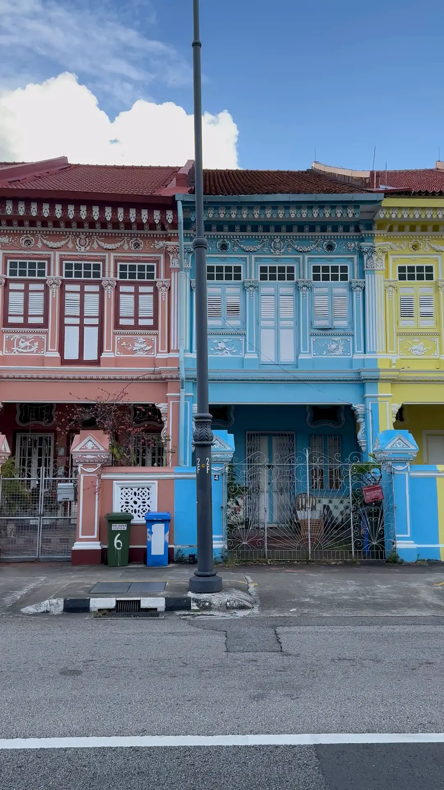
Find us
Two streets from the shophouses everyone photographs.
21 Jalan Gerimis, #01-03
Singapore
+65 6100 0218
hello@hujanpanas.sg
| Tuesday to Thursday | 12:00 – 22:30 |
|---|---|
| Friday and Saturday | 12:00 – 23:30 |
| Sunday | 12:00 – 22:00 |
| Monday | Closed |
One house rule: if it is still raining at closing time, the pot stays on for another half hour.